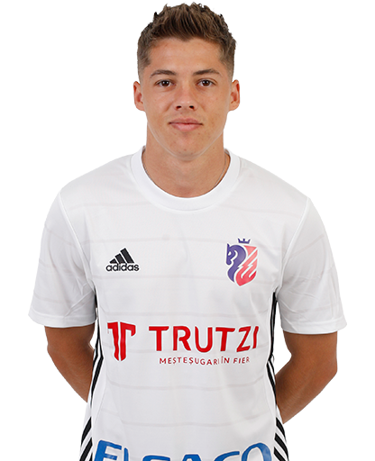
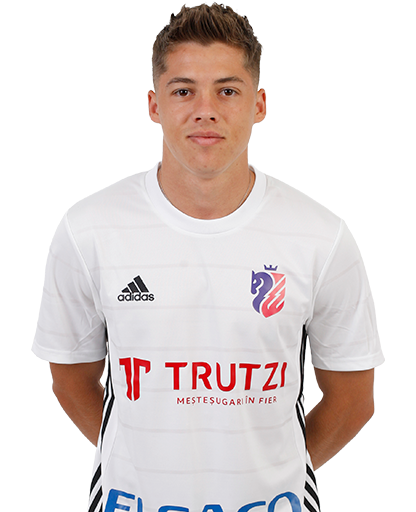

Bun venit la academie!
Academia de Fotbal Botoșani este cel mai grandios proiect al fotbalului românesc. Acest proiect se doreşte a fi măsura recunoştinţei lui Gheorghe Hagi faţă de toţi cei care au avut încredere în el şi l-au susţinut de la primii paşi în fotbal şi până la retragere.
Prin crearea Academiei, Gheorghe Hagi a considerat că a venit momentul ca la rândul său să ofere cât mai multor copii şansa de a se pregăti la cel mai înalt nivel şi de a avea performanţe chiar mai mari decât ale sale. Întinsă pe şapte hectare în apropierea oraşului Botoșani, Academia de Fotbal Botoșani se compune din următoarele zone de activitate: terenuri de joc şi antrenament (opt la număr, cu gazon natural şi artificial, prevăzute cu instalaţie de nocturnă), corpuri de clădire cu funcţiuni specifice, precum şi parcări, platforme, alei, accese auto şi pietonale. Toate terenurile cu gazon natural, precum şi spaţiile verzi din incintă sunt întreţinute prin folosirea unor sisteme de irigaţii performante, automatizate.
Academia Botoșani
Scopul principal al Academiei îl reprezintă iniţierea, formarea, dezvoltarea şi pregătirea copiilor şi juniorilor pentru performanţă la cel mai înalt nivel, atât pe plan naţional, cât şi internaţional. Totodată, alte meniri ale Academiei sunt realizarea de acţiuni îndreptate către comunitate, îmbunătăţirea vieţii copiilor prin fotbal şi promovarea sportului ca un mod de viaţă sănătos.
Sunt aproximativ 250 de sportivi în cadrul Academiei, împărțiti pe 13 categorii de vârstă, de la 6 la 19 ani. În principal, componenții categoriilor 6-12 ani provin din județul Constanța, urmând ca după vârsta de 13 ani atenția recrutării fotbaliștilor să se îndrepte și spre jucătorii din întreaga țară. De altfel, după vârsta de 13 ani Academia Hagi funcționează după un proiect unic în România: 66 de sportivi într-un regim comun complet (cazare, masă, școală, antrenamente). Cei 66 de sportivi sunt structurați astfel:
11 jucători de 13 ani (câte unul pe post)
11 jucători de 14 ani (câte unul pe post)
11 jucători de 15 ani (câte unul pe post)
11 jucători de 16 ani (câte unul pe post)
11 jucători de 17 ani (câte unul pe post)
11 jucători de 18 ani (câte unul pe post)
Academia este mai mult decât un proiect sportiv, de pregătire a viitorilor fotbalişti profesionişti, este si un proiect social şi de educaţie. La Academie, copii si tineri au parte de educaţie şcolară, pe lângă cea sportivă, şi mulţi dintre ei sunt beneficiari de burse pentru a se putea susţine. O importanţă deosebită este acordată învăţământului. La Academie s-a creat un program special pentru ca sportivii să urmeze cu stricteţe cursurile şcolare, însă în acelaşi timp s-a asigurat un program de odihnă între orele de la şcoală şi antrenamente.
În acelaşi timp, Academia de Fotbal Botoșani reprezintă şi un proiect social în care sunt angrenaţi peste 200 de copii sportivi. Este un mediu sănătos pentru orice copil, care beneficiază la Academie de toate pârghiile pentru a-şi dezvolta şi modela latura umană: disciplină, politeţe, oraganizare, socializare, comportament în grup, lucru în echipă.
Pentru că fotbalul este un factor educațional, Academia Botoșani a impus sportivilor câteva criterii clare prin care își recompensează jucătorii. Astfel, pentru promovarea prematură la o grupă mai mare de vârstă și la alcătuirea echipei pentru meciurile săptămânale din campionat se face o medie aritmetică între randamentul de la fotbal (antrenamente și meciuri), eficacitatea școlară și comportamentul din spațiul de cazare.
În orice perioadă a anului Academia Botoșani organizează riguroase acţiuni de selecţie pentru că, până la urmă, unul din scopurile principale ale Academiei este producerea de jucători pentru fotbalul de înaltă performanţă. Obiectivul final al Academiei este acela de a produce un jucători competitivi, care să pătrundă şi să se menţină la nivel de performanţă intern, internaţional sau loturi naţionale. De altfel, pentru faptul că Academia a funcţionat încă din start pe principii sănătoase, rezultatele n-au întârziat să apară. În primii zece ani de existenţă s-au obţinut 24 titluri naţionale de juniori, iar media anuală a jucătorilor furnizați loturilor naționale ale României (seniori, U21, U19, U18, U17, U16, U15) depășește 40 de jucători / sezon.